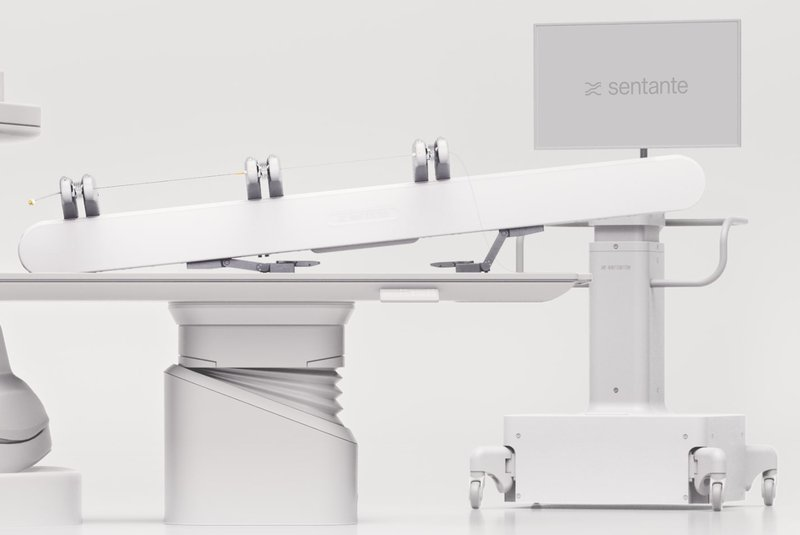

Commercial and clinical-stage systems · sentante_sentante2022
SENTANTE
SENTANTE Endovascular Robotic System

1 / 6


- Family
- Commercial and clinical-stage systems (commercial)
- Devices
- 3 coaxial: one guidewire 0.014-0.035 in + two over-the-wire catheters 2-8 Fr; standard off-the-shelf devices
- Degrees of freedom
- 2 per device (advance, rotate), 3 devices
- Push
- Other drives
- Twist
- Rotating drive unit
- Tested up to
- Human
- Sim-to-real
- None found — No simulation-trained controller found for this robot.
Testing
- Highest level
- Human
- What was tested
- ESSENTIAL first-in-human started July 2024, Paula Stradins hospital Riga (press; NCT06537947); 6 pigs; 24 GLP remote animal procedures and transatlantic cadaver thrombectomy (press)
- Key numbers
- pig study: no angiographic vessel injury; minimal trauma 3/16 vessels at necropsy (huistra2026_evaluation abstract). ESSENTIAL: 100% technical success, 0 device complications (unite.ai, unverified press).
Mechanism
- Push (translation)
- other: paired sterile cassettes grip device and travel on rails
- Twist (rotation)
- cassette rotation
- Device range
- N.R.
- Target anatomy
- peripheral, visceral; vertebral stenting in pigs; stroke thrombectomy shown on cadaver models (press)
Sensing and interface
- Force sensing
- yes: bedside unit measures manipulation force
- Leader and haptics
- yes: leader uses real catheter/guidewire at workstation, reflects measured force
- Imaging
- remote workstation outside X-ray field
- Sterility
- 3 pairs of sterile single-use cassettes
Size
- Footprint (mm)
- N.R.
- Mass (kg)
- N.R.
Simulation
- Simulation model
- none found
- Sim-trained controller
- none found
Versions
- Lineage
- single platform; CE mark reported 2026-05-22; commercial rollout announced 2026-08-20 (unite.ai only, lower certainty)
Sources
- Evaluation of Fully Teleoperated Robotic Endovascular Interventions with Haptic Feedback: The SENTANTE Endovascular Robotic System · CardioVascular and Interventional Radiology, 2026 · doi:10.1007/s00270-026-04375-w [huistra2026_evaluation]
- Robotic Systems in Cardiovascular Interventions: Evolving Platforms and the Path Forward · Methodist DeBakey Cardiovascular Journal, 2025 · doi:10.14797/mdcvj.1652 [mandhumula2025_robotic]
- Robot-Assisted Cardiovascular Interventions · Journal of the Society for Cardiovascular Angiography & Interventions, 2025 · doi:10.1016/j.jscai.2025.102568 [george2025_robot]
Notes
- Notes
- Only teleoperated system with true device-handle haptics among commercial systems found.
This record
- Read level
- full — full text on disk (survey txt) for huistra; web for CE
- Picture
- https://sentante.com/wp-content/uploads/2025/12/Frame-2087328849-min.jpg (home page https://sentante.com/) ↗ — licence: press image (Sentante); grade B
- Picture changes
- cropped (930,455)-(2350,1405) of 2800x1680 (bedside rail unit + mast + monitor, C-arm cut away)
- Found by
- commercial: Search of commercial and clinical-stage systems.
- Data
- JSON · YAML:
records/robots/sentante_sentante2022.yaml - Correction
- Suggest a correction [repository not created yet]